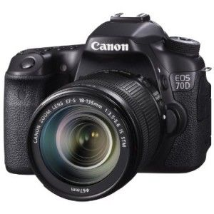

Search Results
EOS 7D18

Description
- Canon's innovative Dual Pixel CMOS AF enables you to shoot video like a camcorder with smooth, fast, and accurate autofocus; lets you enjoy instant and precise autofocus even when shooting stills from a variety of angles with the freedom provided by the Vari-angle LCD; and provides amazing autofocus power with 103 compatible Canon EF lenses when shooting photos or video.
- Built-in wireless technology allows you to wirelessly transfer your images to social networking sites through CANON iMAGE GATEWAY
Pricing
Review
- Getting into photography was the best decision I have made. I am happy that I get to start with the 70D to learn the ins and outs of what it takes to take good shots. 70D so far has made it easier for me to learn the basics while switching on and off to manual and auto to really understand the shots you can get. Still have lots to learn just wish Canon had classes here in DC.